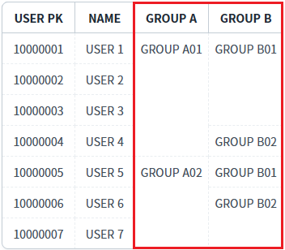
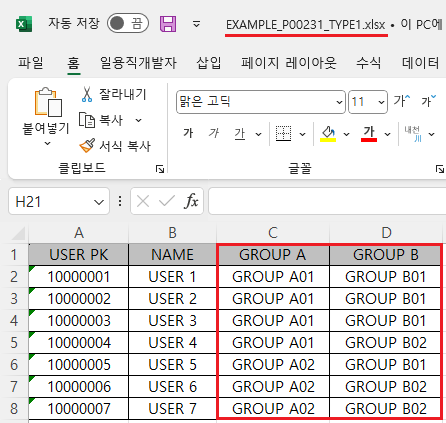
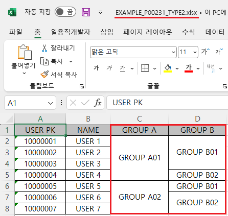

GridView의 'advancedExcelDownload' 메소드의 첫 번째 인자인 JSON 객체의 'colMerge'와 'colMergeValue'를 사용하여 셀이 병합된 상태로 엑셀 파일이 다운로드되도록 설정한 예제입니다.
colMerge : [default: false, true] colMerge된 컬럼을 Merge해서 출력 할 지 여부
colMergeValue : [default: false, true] colMerge된 컬럼을 다운로드한 Excel 파일에서 병합을 취소할 경우 모든 셀에 데이터를 채우는 기능.
엑셀 다운로드 - 기본 동작
엑셀 다운로드 - 병합된 상태 적용
1
STEP 1: 초기 상태 확인하기
GridView의 'GROUP A', 'GROUP B' 컬럼에 병합 기능이 적용되어 있습니다.
Image 1.브라우저(Chrome) 실행 예시

2
STEP 2: '엑셀 다운로드 - 기본 동작' 버튼을 클릭합니다.
'EXAMPLE_P00231_TYPE1.xlsx' 엑셀 파일이 다운로드 됩니다.
3
STEP 3: 실행된 결과를 확인합니다.
다운로드 된 'EXAMPLE_P00231_TYPE1.xlsx' 파일을 실행합니다.
병합이 적용되지 않고 엑셀 파일이 생성되었습니다.
Image 2.다운로드된 엑셀(2021) 파일 예시

1
STEP 1: 초기 상태 확인하기
GridView의 'GROUP A', 'GROUP B' 컬럼에 병합 기능이 적용되어 있습니다.
Image 3.브라우저(Chrome) 실행 예시
2
STEP 2: '엑셀 다운로드 - 병합된 상태 적용' 버튼을 클릭합니다.
'EXAMPLE_P00231_TYPE2.xlsx' 엑셀 파일이 다운로드 됩니다.
3
STEP 3: 실행된 결과를 확인합니다.
다운로드 된 'EXAMPLE_P00231_TYPE2.xlsx' 파일을 실행합니다.
병합이 적용되지 않고 엑셀 파일이 생성되었습니다.
Image 4.다운로드된 엑셀(2021) 파일 예시

1
'advancedExcelDownload' 메소드를 사용하여 설정합니다.
Example 1.Script
//예제 파일의 스크립트 "scwin.btn_ex2_onclick"를 참고하세요. var jsnOptions = { fileName: "EXAMPLE_P00231_TYPE2.xlsx", //엑셀의 파일명 colMerge: "true", //colMerge된 컬럼을 병합 출력 colMergeValue: "true" //Excel에서 병합을 취소할 경우 셀에 데이터를 채움 }; //colMerge : [default: false, true] colMerge된 컬럼을 Merge해서 출력할 지 여부 //colMergeValue : [default: false, true] colMerge된 컬럼을 Excel에서 병합을 취소할 경우 모든 셀에 데이터를 채우는 기능. (true : 병합 해제된 모든 셀에 데이터를 채움, false : 첫 행이나 첫 열에만 데이터가 표시) //GridView "grd_exam1"의 엑셀 다운로드 실행 grd_exam1.advancedExcelDownload(jsnOptions);
advancedExcelDownload( options , infoArr )
options.colMerge
options.colMergeValue
[body column] colMerge